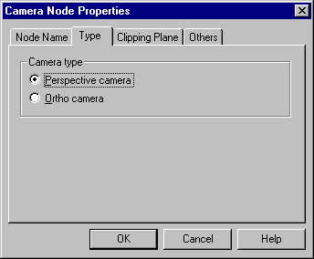

The following tabs are available in the Camera Node Properties dialog box:
he [Node name] tab sets the name of the Camera node.

If the node is linked, the node name is displayed in the [Node name for camera] text box. If it is not linked, then "Unknown" is displayed here. To change the node name, edit the name that is displayed. To specify a new name for a node that is not linked, delete "Unknown" and input the desired name. Conversely, to delete the node name, delete the name that is displayed in the text box. Please note that ASCII characters from "!" (0x21) to "~" (0x7e) can be used for node names. In addition, node names cannot contain spaces, nor can they contain kanji, hiragana or katakana characters.
The [Type] tab sets the camera type.

For camera type, choose either [Perspective camera] or [Ortho camera].
Use the [Clipping plane] tab to set the camera's clipping planes.

The following elements are set under the clipping plane tab.
Please use floating decimal values to set clipping planes.
Use the [Others] tab to set the Fovy value, the Aspect ratio, and the Scale value.

Please use floating decimal values to set the [Fovy value], the [Aspect ratio] and the [Scale value].